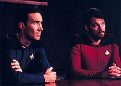
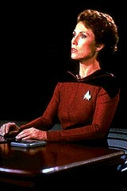
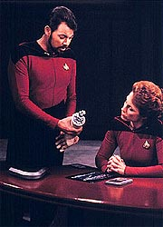
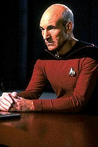
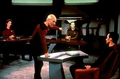

|
MANCHETE
DO EPISDIO
Obra-prima
da srie estabelece os
direitos 'humanos' do andride Data
Episdio
anterior | Prximo
episdio
Sinopse:
Data Estelar: 42523.7.
Quando a Enterprise chega nova Base Estelar 173, Picard encontra
Phillipa Louvois, a oficial que serviu como promotoria durante a
corte-marcial aplicada ao capito pela perda da USS Stargazer. Ele
tambm encontra o almirante Nakamura, acompanhado do comandante
Bruce Maddox. O almirante pede a Picard para visitar a Enterprise.
 O
trio volta nave e Picard mostra as instalaes ao almirante.
Durante o tour pela ponte, Nakamura comunica a Picard que Maddox est
l para realizar um experimento com o comandante Data. Mais
precisamente, ele quer desmontar o andride, na expectativa de
concluir o sonho de reproduzir o trabalho do doutor Noonien Soong, o
criador de Data, para que mais autmatos como ele possam ser
produzidos para uso da Frota Estelar.
Mas quando Maddox apresenta os detalhes de sua proposta aos oficiais
seniores da Enterprise, Data expressa a preocupao de que o
cientista no seja capaz de remont-lo adequadamente, mantendo
intacta sua personalidade e vivncia. Em razo disso, ele se
recusa a participar do procedimento.
Ao saber da deciso, Maddox comunica que Data no tem escolha, uma
vez que o Comando da Frota Estelar acabou de retir-lo de seu posto
na Enterprise e design-lo para trabalhar no projeto. O capito
Picard tenta encontrar um meio decancelar as ordens, mas no
consegue, deixando a Data a nica alternativa possvel --o andride
precisa pedir baixa da Frota Estelar.
 Sua
deciso de pedir baixa, entretanto, desafiada por Maddox. O
cientista afirma que Data no pode renunciar a seu posto, pois ele
seria apenas uma propriedade da Frota Estelar, e no um oficial com
plenos direitos, como outro qualquer.
A oficial da Advocacia Geral no setor, a JAG Phillipa Louvois,
concorda que o pedido de Maddox tem um precedente histrico em seu
favor ocorrido durante o sculo 21. Picard desafia a deciso,
pedindo uma audincia. Como Louvois no tem staff suficiente para
prosseguir com o processo, ela obrigada a convocar o prprio
Picard para defender Data, enquanto Riker designado acusao.
Seguindo a lei risca, Phillipa avisa ao primeiro-oficial da
Enterprise que, se sentir que ele no est se esforando, dar
julgamento sumrio em favor de Maddox.
Sem nenhuma outra escolha, Riker aceita o encargo de defender o
ponto de vista de Maddox, argumentando que Data simplesmente uma
mquina --uma criao de um homem-- e dramaticamente enfatiza
isso ao se aproximar do andride por trs e desligando-o,
deixando-o sem vida na poltrona em que estava sentado.
 Certo
de sua derrota, Picard pede um recesso. De volta Enterprise, ele
tem uma discusso com Guinan. A bartender sugere que o desejo da
Federao de criar e ter como propriedade uma raa inteira de
andrides descartveis uma recriao da escravido.
Picard inspirado pela conversa, e, de volta audincia, faz um
pedido apaixonado em favor da liberdade de Data, dizendo que, de um
modo ou de outro, todos os seres so criados por outros, mas isso no
necessariamente faz deles propriedade de seu criado. Phillipa
concorda com ele, dizendo que Data pode mesmo ser uma mquina, mas
ele no pertence a ningum e tem o direito de fazer suas prprias
escolhas.
Comentrios:
"The
Measure of a Man" um dos melhores episdios do segundo
ano, se no for o melhor, e certamente figura entre as peas mais
brilhantes de toda a srie. Ele demonstra que um episdio de Jornada
nas Estrelas no precisa de nenhuma ao para ser
interessante. Sem qualquer tipo de agito, o episdio carrega uma
tenso e um contedo intelectual que poucos poderiam considerar pfios.
Mais do que isso, o segmento consegue explorar de forma positiva os
principais personagens envolvidos (no caso Picard, Data, Phillipa
Louvois, Bruce Maddox e, no fim da escala, Riker) e ao mesmo tempo
produzir forte contedo moral e tico, sem aquele tpico ranso de
obviedade e tendncia politicamente correta que vimos na maior
parte dos episdios da primeira e segunda temporadas.
H vrios ecos e homenagens aqui do episdio clssico "Court-Martial",
que aparecem de forma perifrica, mas facilmente perceptvel para
os fs. A plataforma em que as testemunhas repousam a mo antes
que o computador recite a ficha pessoal de cada um apareceu pela
primeira vez l. At a cena em que Maddox interrompe a leitura da
ficha de Data apenas para Picard pedir que seja lida at o final
faz forte eco a situao semelhante vivida por James T. Kirk e
Samuel T. Cogley.
 O
episdio traz outros traos interessantes de continuidade, como
histrias da poca da corte marcial da Stargazer, que adicionam
dramaticidade ao segmento. Mas nem s de continuar ele vive; tambm
criou algumas tradies que seriam seguidas a partir dali. A mais
marcante talvez seja a primeira apario do tpico jogo de pquer
que acontece nos aposentos de Riker regularmente.
Do ponto de vista da narrativa, o episdio no deixa de ser uma
verso espacial de "Lei & Ordem", com a diferena de
que possui menos ao, por s tratar da poro judicial da
disputa ("Lei & Ordem" envolve tambm a ao da polcia).
Mas o objeto do conflito muito menos mundano do que o de um tpico
episdio da srie policial.
"The Measure of a Man" discute escravido de um
ponto de vista maduro e bastante slido para um programa de fico
cientfica. No s o debate sobre a "vida" artificial
conduzido, mas tambm sobre os usos que destinamos tecnologia
que criamos --uma pergunta que passa a ser no-trivial quando as mquinas
agem exatamente (ou aproximadamente) como seres humanos.
O dilogo entre Picard e Guinan arrebatador nesse sentido.
Escrito de forma brilhante, ele no exige quaisquer explicaes
adicionais, embora seja sutil o suficiente para no esfregar a
moral da histria na cara do telespectador.
Alis, falar em moral da histria num episdio como esse at
perigoso --ela se d em vrios planos. Primeiro, o plano filosfico,
que vale para todos os andrides que j existiram, e que existiro
no futuro. O segundo, o plano pessoal, em termos de justia para o
comandante Data que sem dvida (e a audincia sabe disso h um
ano e meio) o que eles chamam de sensciente.
interessante notar como o episdio mostra uma mudana de mar
com relao ao pensamento dos anos 60 e dos anos 80. Na Srie
Clssica, por mais de uma vez foi destacado que andrides
jamais seriam capazes de chegar ao patamar dos seres humanos. Agora,
um episdio estabelece para todo o sempre os direitos dos andrides
como organismos que tm os mesmos direitos que um ser humano,
apesar de sua natureza artificial. Sinal dos tempos, sem dvida
alguma.
 Apesar
de seu contedo intelectual, o episdio consegue ser um vencedor
porque tambm fala, e muito bem, ao corao. A audincia
envolvida na histria e sofre (at muito mais que Data) com o
destino do andride. Mais uma vez, a habilidade do roteiro
administra isso de forma brilhante. A cena final, em que Data
"desculpa" Riker por ter sido seu acusador, consegue
trazer ainda mais admirao para o andride, deixando para a audincia
uma sensao de satisfao, quase de orgulho, pelo desfecho dos
acontecimentos.
Um episdio cuja qualidade indiscutvel. E sem um disparo
feiser. "The Measure of a Man" mostra bem qual pode
ser a medida de qualidade para Jornada nas Estrelas.
Citaes:
Picard - "Phillipa
Louvois, and back in uniform. It's been ten years, but seeing you
again like this... makes it seem like fifty. If we weren't around
all these people, do you know what I would like to do?"
("Phillipa Louvois, e de volta a um uniforme. Passaram dez
anos, mas v-la assim de novo... faz parecer que foram cinquenta.
Se no estivssemos com tanta gente em volta, sabe o que gostaria
de fazer?")
Louvois - "Break a chair across my teeth?"
("Quebrar meus dentes com uma cadeira?")
Picard - "After that."
("Depois disso.")
Louvois - "Oh, ain't love wonderful?"
("Oh, o amor no lindo?")
Louvois - "It brings a sense of order and stability to my
universe to know that you're still a pompous ass... and a damn sexy
man."
("Traz um senso de ordem e estabilidade ao meu universo saber
que voc ainda um bundo pomposo... e um homem muito
sexy.")
Louvois - "Data is a toaster."
("Data uma torradeira.")
Guinan - "Consider that in the history of many worlds, there
have always been disposable creatures. They do the dirty work."
("Considera que na histria de muitos mundos, sempre houve
criaturas dispensveis. Elas fazem o trabalho sujo.")
Picard - "Your Honor, Starfleet was founded to seek out new
life. Well, there it sits!"
("Meritssimo, a Frota Estelar foi fundada para procurar novas
vidas. Bem, ali est uma delas!)
Trivia:
 O personagem Richard Daystrom, do episdio da Srie Clssica
"The Ultimate Computer", recebe uma homenagem neste
episdio, com a meno do Instituto Tecnolgico Daystrom,
situado na Terra. Esse Instituto ainda seria mencionado nos episdios
"Booby Trap", "Captain's Holiday" e
"Data's Day".
O personagem Richard Daystrom, do episdio da Srie Clssica
"The Ultimate Computer", recebe uma homenagem neste
episdio, com a meno do Instituto Tecnolgico Daystrom,
situado na Terra. Esse Instituto ainda seria mencionado nos episdios
"Booby Trap", "Captain's Holiday" e
"Data's Day".
O costumeiro jogo de pquer entre os oficiais da Enterprise-D (com
a exceo de Picard) visto pela primeira vez neste episdio.
Aqui so revelados alguns detalhes sobre Data. Seu nome no registro
da Federao NFN NMI Data (No First Name, No Middle Initial).
Data tem 800 quadrilhes de bits em seu crebro positrnico, e
pode realizar 16 trilhes de clculos por segundo.
O comandante Maddox, que aparece neste episdio, voltar a ter seu
nome mencionado por Data no episdio "Data's
Day", da quarta temporada.
Amanda McBroom, que interpreta a capit Phillipa Louvois, uma
grande f de Jornada nas Estrelas e de fico cientfica
em geral. Na televiso ela participou de episdios das sries
Hawaii 5-0, M.A.S.H, Remington Steele, Casal 20, Magnum e Taxi. Em
1980 ela ganhou um Globo de Ouro por ter sido co-escritora da msica
"The Rose", cantada por Bettle Midler para o filme de
mesmo nome.
Ficha
tcnica:
Escrito por Melinda M. Snodgrass
Direo de Robert Scheerer
Exibido em 13/02/1989
Produo: 035
Elenco:
Patrick Stewart como
Jean-Luc Picard
Jonathan Frakes como William Thomas Riker
Brent Spiner como Data
LeVar Burton como Geordi La Forge
Michael Dorn como Worf
Marina Sirtis como Deanna Troi
Wil Wheaton como Wesley Crusher
Elenco convidado:
Diana Muldaur como
Katherine "Kate" Pulaski
Whoopi Goldberg como Guinan
Brian Brophy como comandante David Maddox
Clyde Kusatsu como almirante Nakamura
Amanda McBroom como Phillipa Louvois
Episdio
anterior | Prximo
episdio
|